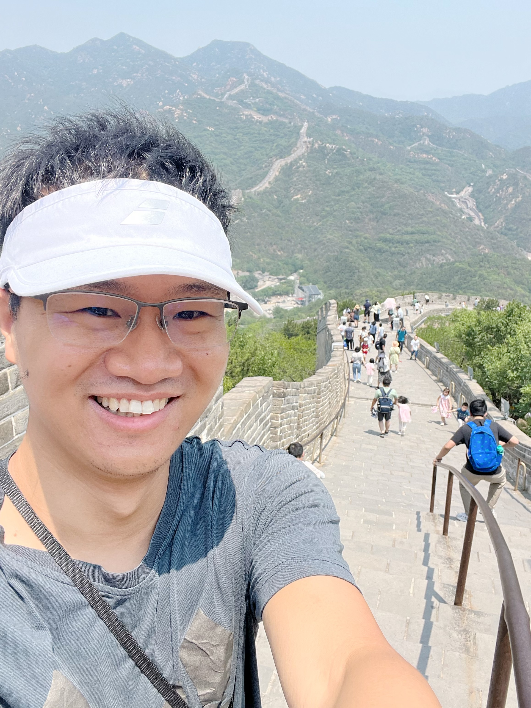

I am a student at Yau Mathematical Sciences Center, Tsinghua University, Beijing. My supervisor is Professor William Donovan.
My research is in algebraic geometry. I am interested in geometry of derived categories, especially the indecomposability problems. I am also interested in Hochschild (co)homology theory, para-canonical systems, Hodge theory, rational points of algebraic varieties, and number theory.
Office: Student office 4, Jinchun yuan West Building, Tsinghua University.
Email: lin-x18@mails.tsinghua.edu.cn
My CV .
[Oct 2022] Tsinghua preprint seminar. Categorical Torelli.
[July 2022] University of Warwick, online poster session of VBAC seminar. Indecomposibility of the bounded derived categories of Brill-Noether varieties.
[April 2022] Stony Brook university, algebraic geometry seminar. Nonexistence of semi-orthogonal decompositions and sections of para-canonical systems.
[March 2022] Cornell university, algebraic geometry seminar. Nonexistence of semi-orthogonal decompositions and sections of para-canonical systems.
[Jan 2022] Southern University of Science and Technology, Shenzhen, Geometry and Topology seminar. Nonexistence of semi-orthogonal decompositions and sections of para-canonical systems.
[Fall 2021] Tsinghua University, student seminar, VGIT and derived categories.
[Sept 2021] Tata Institute of Fundamental Research, India. Nonexistence of semi-orthogonal decompositions and the base locus of para-canonical systems.
[June 2021] Edinburgh University, Internal seminar. Derived categories of symmetric product of curves.
[May 2021] Tsinghua University, Geometry representation seminar. Noncommutative Hodge conjecture.
[March 2021] Southern University of Science and Technology, Shenzhen. Noncommutative Hodge conjecture.
[March 2021] Shanghaitech University, Shanghai. Noncommetative Hodge conjecture.
[Fall 2019] Tsinghua University, student algebraic geometry seminar. Examples of Shimura varieties.
[Spring 2019] Tsinghua University, student algebraic geometry seminar. Derived Torelli of K3 surfaces.
[Spring 2019] Tsinghua University, student algebraic geometry seminar. Nonexistence of semi-orthogonal decompositions and sections of canonical bundle.
[Fall 2018] Tsinghua University, student algebraic geometry seminar. Geometry of moduli space of sheaves on surfaces.
[March 2022 - June 2022] Cornell University.
[March, 2021] Shanghai Technology University.
[Sept 2019] Geometry of derived categories, Liverpool University, UK.
[May 2019] Derived categories seminar in Sun Yat-Sen University, GuangZhou.
[May 2019] Algebraic geometry for Young scholars in USTC, Hefei.
General Topology, TA.
Mathematical Analysis 2, TA.
Functional Analysis 1, TA.
Calculus A, TA.
Algebraic geometry 1, TA.
Students seminar in Tsinghua University, Fall, 2022. preprint seminar.